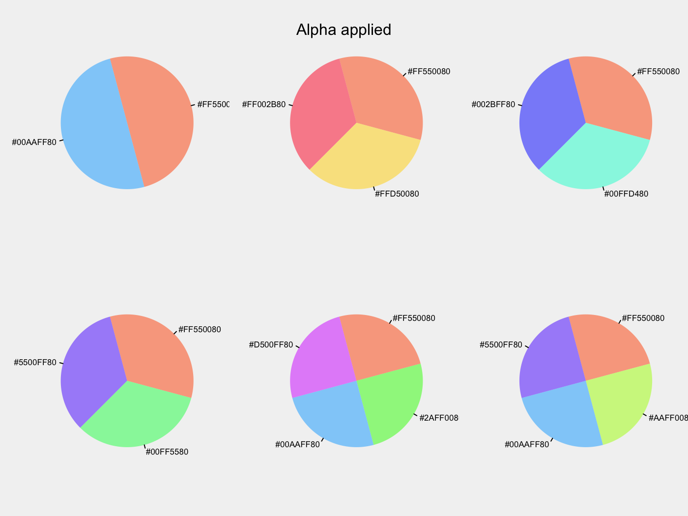

Visibly is a handful of functions I use for color palettes, themes, etc. in R. Inside you will find:
- some ready-made palettes, e.g. based on R blue and Stan red
- a function to quickly and easily create palettes with using
colortools::complementarycolortools::adjacentetc. - clean, web-friendly themes for ggplot2 and plotly
- a function to interact with colorgorical
Installation
The development version then install directly from GitHub:
Visibly is currently in its very early stages, so more may be added soon. For some additional palettes for those fond of another time, you might be interested in NineteenEightyR.
Examples
Create a palette. This requires the colortools package to create equally spaced colors.
library(visibly)
create_palette('papayawhip')
$papayawhip
[1] "papayawhip"
$complementary
[1] "#FFEFD5" "#D5E5FF"
$analogous
[1] "#FFEFD5" "#FAFFD5" "#FFDAD5"
$split_complentary
[1] "#FFEFD5" "#D5FAFF" "#DAD5FF"
$triadic
[1] "#FFEFD5" "#D5FFEF" "#EFD5FF"
$square
[1] "#FFEFD5" "#D5FFDA" "#D5E5FF" "#FFD5FA"
$tetradic
[1] "#FFEFD5" "#E5FFD5" "#D5E5FF" "#EFD5FF"Plot it to get a feel for things.

$`#ff5500`
[1] "#ff5500"
$complementary
[1] "#FF5500" "#00AAFF"
$analogous
[1] "#FF5500" "#FFD500" "#FF002B"
$split_complentary
[1] "#FF5500" "#00FFD4" "#002BFF"
$triadic
[1] "#FF5500" "#00FF55" "#5500FF"
$square
[1] "#FF5500" "#2AFF00" "#00AAFF" "#D500FF"
$tetradic
[1] "#FF5500" "#AAFF00" "#00AAFF" "#5500FF"There are some other options to express.

$orange_you_glad_you_have_this_color
[1] "#FF550080"
$complementary
[1] "#FF550080" "#00AAFF80"
$analogous
[1] "#FF550080" "#FFD50080" "#FF002B80"
$split_complentary
[1] "#FF550080" "#00FFD480" "#002BFF80"
$triadic
[1] "#FF550080" "#00FF5580" "#5500FF80"
$square
[1] "#FF550080" "#2AFF0080" "#00AAFF80" "#D500FF80"
$tetradic
[1] "#FF550080" "#AAFF0080" "#00AAFF80" "#5500FF80"One of the built-in palettes is based on R’s blue. Others are based on Stan’s red, plotly’s base colors, and the red-blue palette from RColorBrewer.
palettes$Rblue
$Rblue
[1] "#1f65b7"
$complementary
[1] "#1f65b7" "#b7701f"
$monochromatic
[1] "#1f65b7" "#366caa" "#4a719e" "#5a7491"
$analogous
[1] "#1f65b7" "#241fb7" "#1fb2b7"
$split_complementary
[1] "#1f65b7" "#b2b71f" "#b7241f"
$triadic
[1] "#1f65b7" "#66b71f" "#b71f66"
$tetradic
[1] "#1f65b7" "#b7701f" "#66b71f" "#701fb7"One can create some colors from colorgorical.
## colorgorical(n=6, pairPreference = 1, startPalette = list(c(10, -60, 45)), output = 'hex')
[1] "#002B00" "#95C857" "#334D37" "#4EF185" "#378811" "#7FE7D3"Pretty, and pretty easy, coefficient plots.